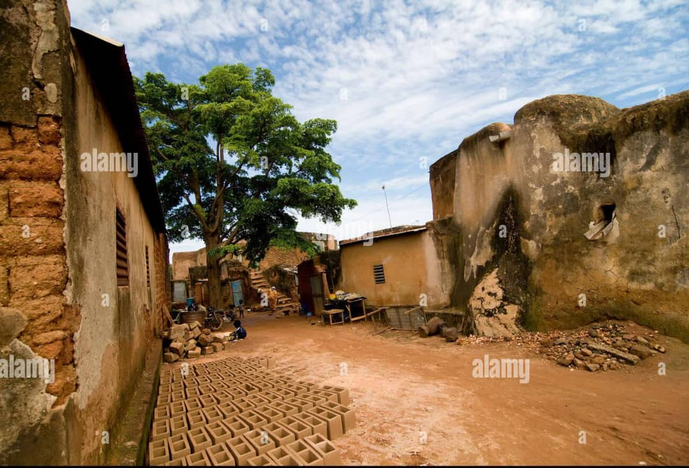
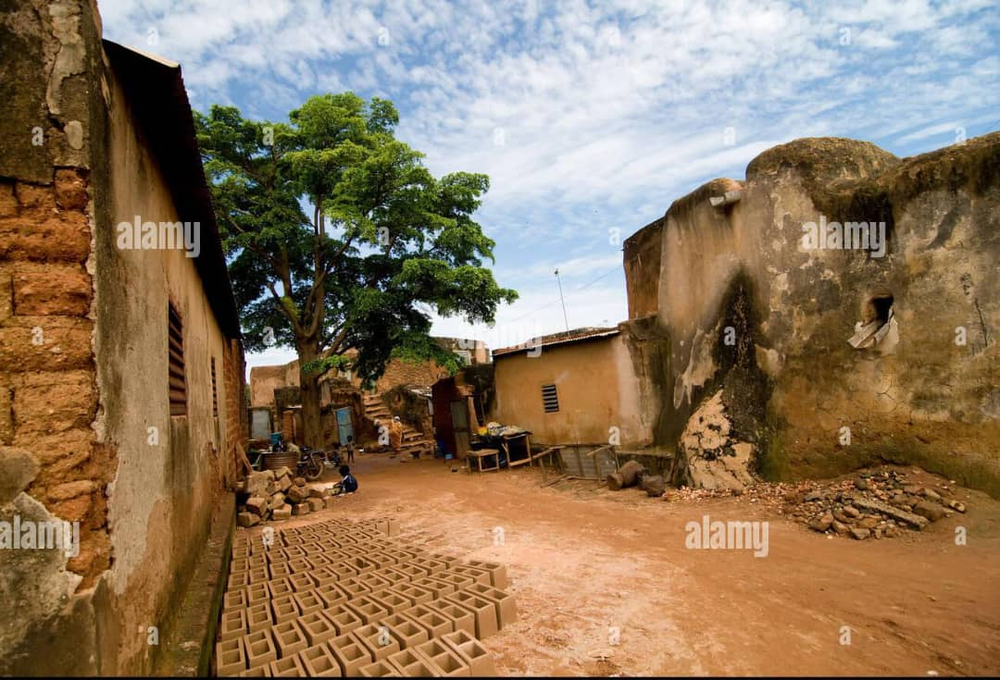
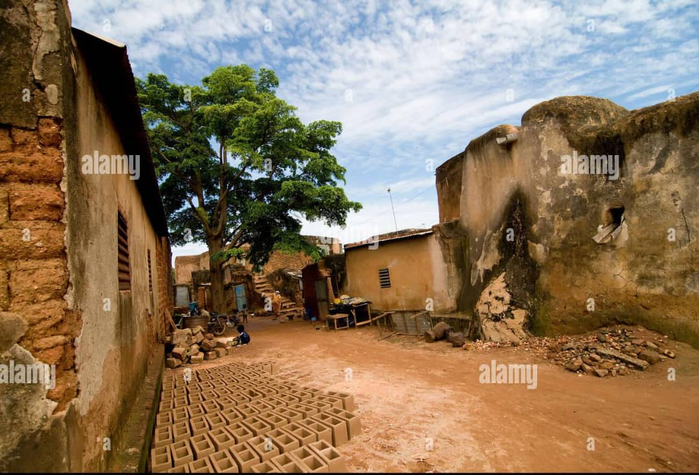
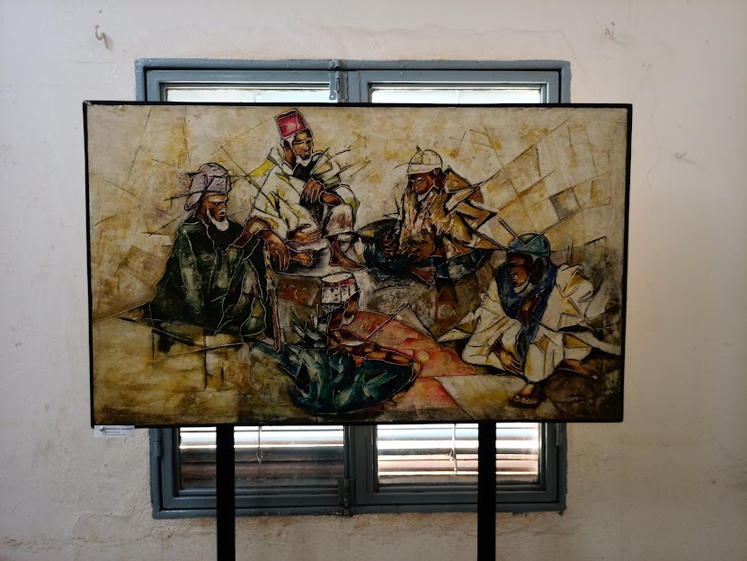
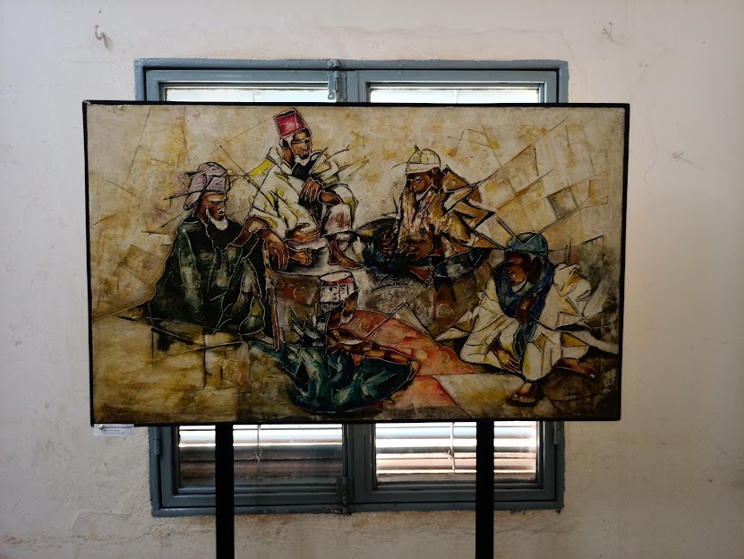

Sya:l'origine,le quartier emblématique de la ville de Bobo-Dioulasso

La vielle mosquee de DIOULASSOBA
La Cathédrale Notre-Dame-de-Lourdes

Le Musée communal Sogossira Sanon
 

Le Mausolée de la princesse Guimbi OUATTARA


Le Mausolée Tiéfo Amoro

Le Monument du Cinquantenaire


La place Tiéfo Amoro
Le lac Sacré de Dafra


La Guingette
Revenir à l'accueil: